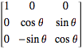
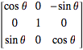

canvas&WebGL
深入了解HTML5提供的图形绘制接口
Created by jasonChen
我们常见的动画
复杂一点的动画
移动端动画技术方案
CSS3动画
SVG动画
canvas动画
webgl动画
性能和优势
| 方案 | 优势 | 缺点 | 性能 |
|---|---|---|---|
| CSS3 | 简单、支持广 | 渲染量少 | 费劲 |
| SVG | 矢量、线条 | 兼容性 | 性能一般 |
| canvas | 点线面全能 | 依赖GPU | 性能较好 |
| webgl | 十项全能 | 重度依赖GPU | 非常好 |
canvas
2d的绘图环境、形状、文字、位图
你可能不知道的canvas
配合4*4列矩阵完成三维图形绘制
所有三维空间的缔造者
| m00 m01 m02 m03 | | x |
| m10 m11 m12 m13 | * | y |
| m20 m21 m22 m23 | | z |
| m30 m31 m32 m33 | | w |
简单的用下矩阵
transform: matrix(1,0,0,1,0,0)
transform: matrix(1,0,0,0,0,1,0,0,0,0,1,0,0,0,0,0)
| x` | | m00 m01 m02 m03 | | x |
| y` | = | m10 m11 m12 m13 | * | y |
| z` | | m20 m21 m22 m23 | | z |
| w` | | m30 m31 m32 m33 | | w |
x` = m00*x+m01*y+m02*z+m03*w
y` = m10*x+m11*y+m12*z+m13*w
z` = m20*x+m21*y+m22*z+m23*w
w` = m30*x+m31*y+m32*z+m33*w
基于欧拉角的旋转矩阵
transform: rotateX(10deg) rotateY(10deg) rotateZ(10deg)

*

*

我都懵逼了
what the hell ~~

我认识的前端不是这样的 >_<

写写脚本、做做数据与视图渲染、管管后端路由模版控制器的吗。
用一用这些算法
这么多动画怎么下手
没做过、 性能怎么办、 纠结、
数学要好、 物理要好、
图形算法好像比处理业务逻辑要难
开始一个简单的
快来用我的库吧
轻量简单、不用了解底层API、做动画很顺手
两个库的共同点：轻量级、适合移动端

移动端开发
我们遇到的阻碍
设备性能
移动设备计算能力很差
浏览器总是无法兼容所有的GPU
阉割版的H5标准
PC、移动端差别巨大
存在不友好、不可控的H5实现
网络
毕竟带宽那么小
合理使用资源
一些建议
不动的元素放在＃document层、要做动画的按规则划分合成层
运动物体超过10个建议用svg或canvas
合理布局，样式足以引起巨大的性能问题